APR 70 PICTURES · MASTER RECAP · THE LIVING DOCUMENT · CURRENT VERSION: V12 · UPDATED 2026-07-13 · LIVE AT STAGING.APR70.COM
Divisions that sell, a Founding Roll that acts, images from SharedData only, and a site whose privacy and rights claims survive inspection.
LIVE AT STAGING.APR70.COM · V12 CURRENT · ROLLBACK ONE COMMAND1EXT. THE MAP - NIGHT
Every card below is a live capture from the deployed preview at kimaserver:8080, taken after the deploy verified. Twelve public surfaces, one design, two modes.
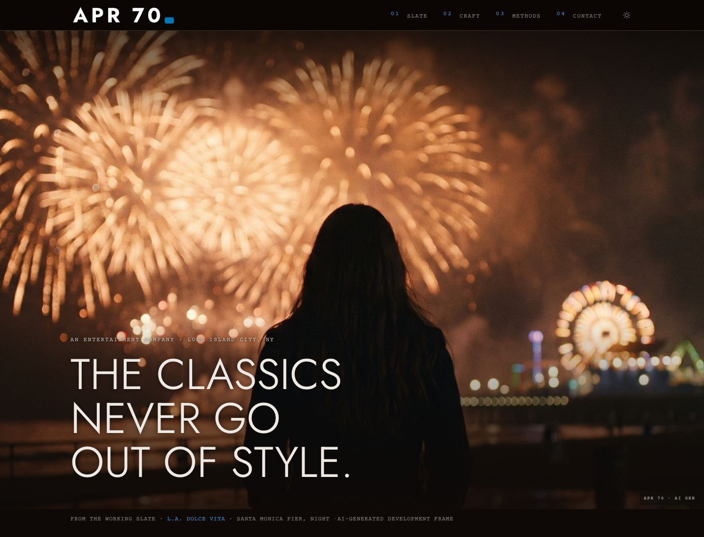
Display-face Light hero over the L.A. Dolce Vita frame. LogoReveal plays once per session, set in the house geometric.
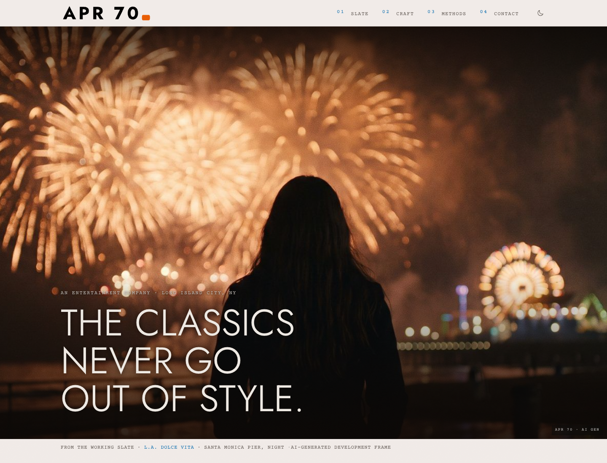
Re-toned to the house hue 55. Photo chrome stays dark in both modes: the gradient law.
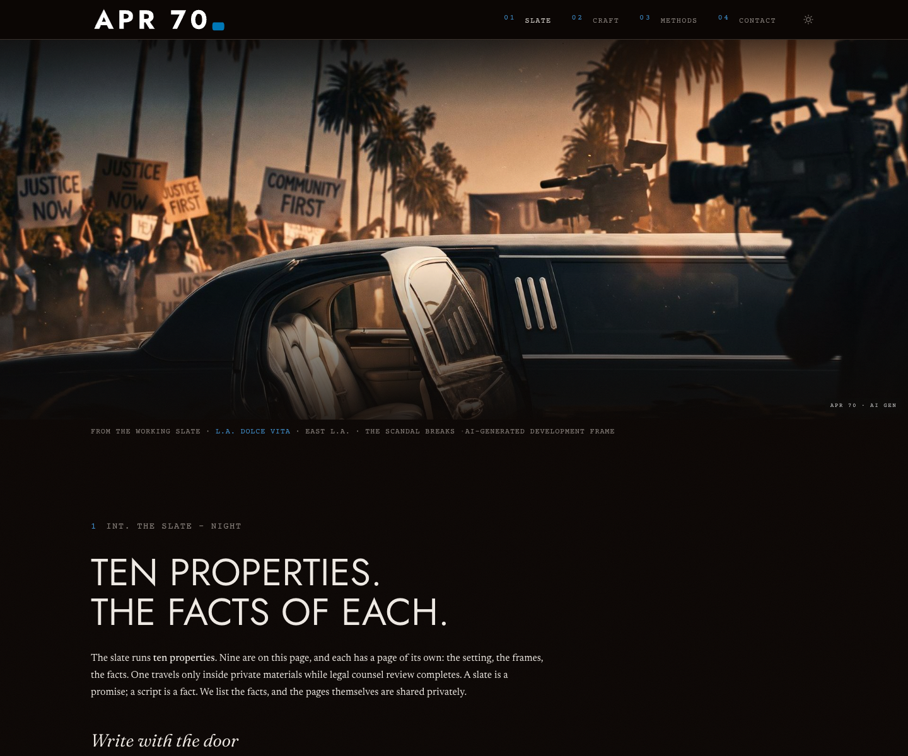
Nine public properties, real continuous numbering, PD provenance on the Hammett titles, division strip at the foot.
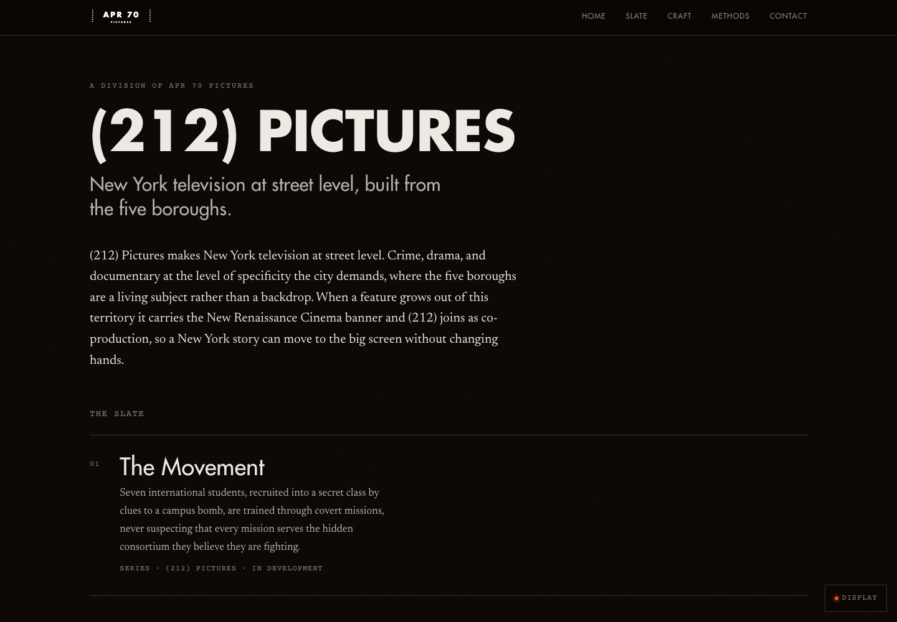
New York television at street level, built from the five boroughs. Typographic lockup per the panel ruling.
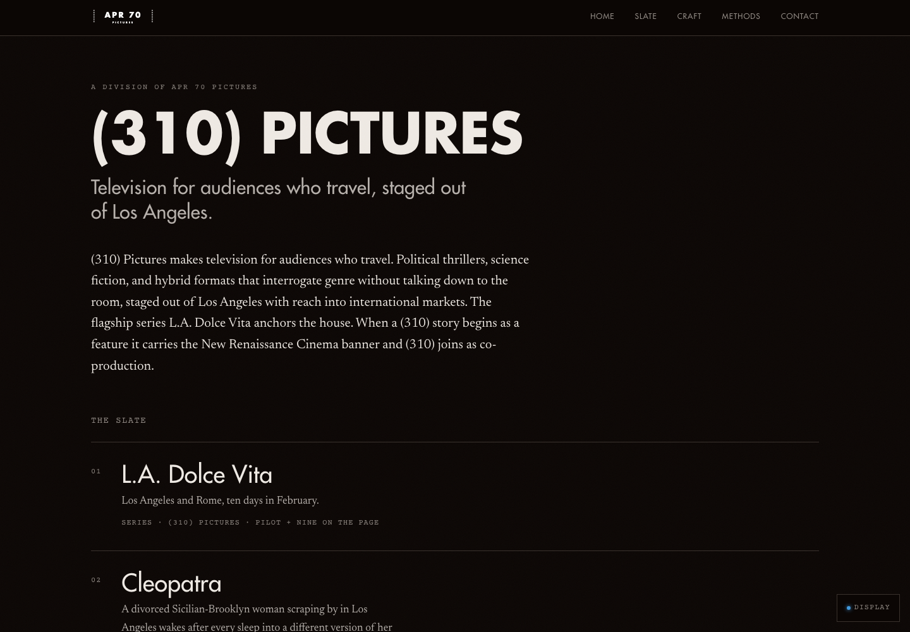
Television for audiences who travel, staged out of Los Angeles. L.A. Dolce Vita rides on top, flagship first.
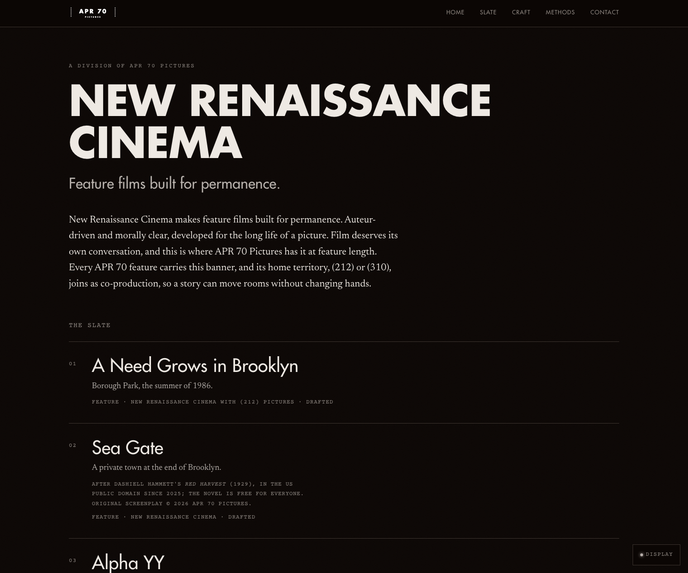
Feature films built for permanence. Six features including Sea Gate and Da Hook, moved home by your ruling.
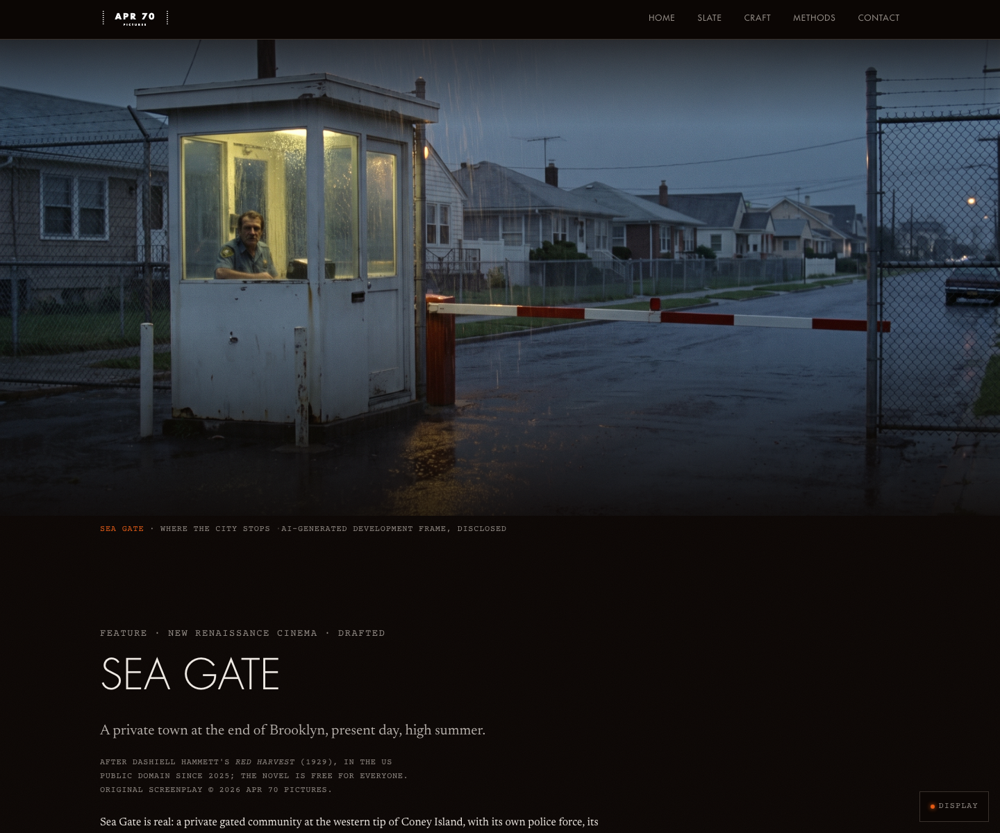
NRC feature. After Hammett's Red Harvest, 1929, US public domain since 2025. Original screenplay reserved.
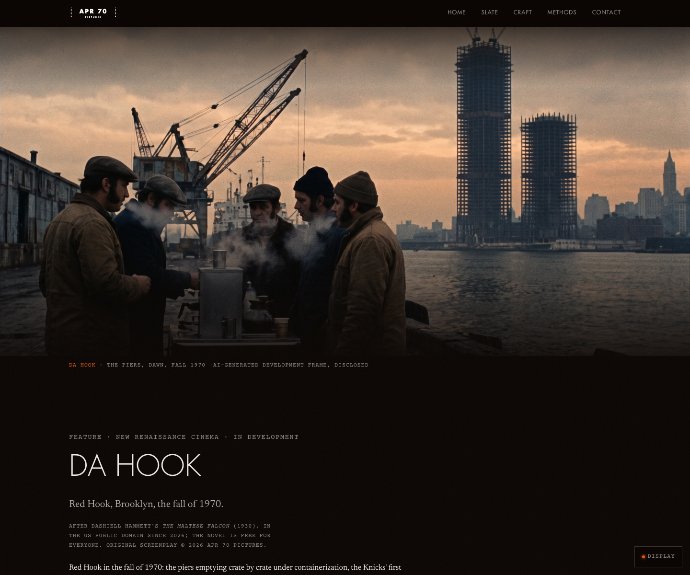
NRC feature. After The Maltese Falcon, 1930, US public domain since 2026, this year. Red Hook, fall 1970.
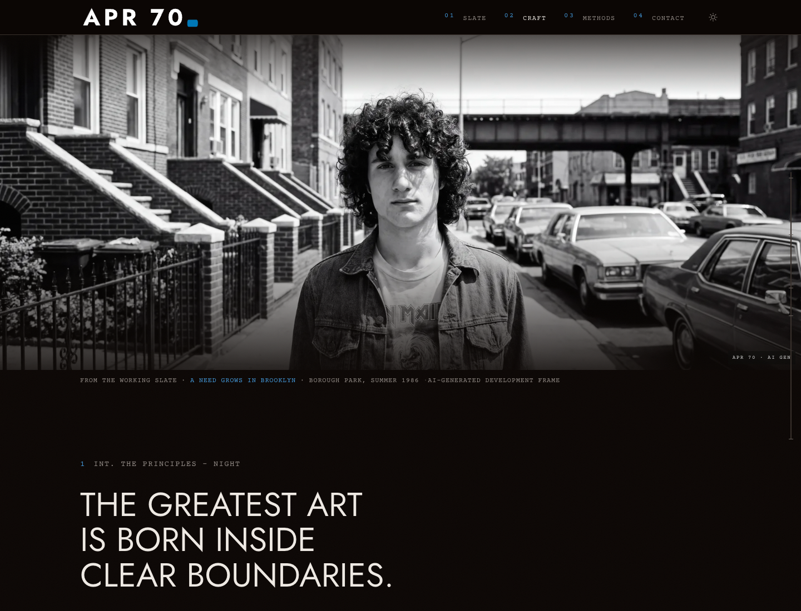
The craft of constraint, restored frame in the photo fold.
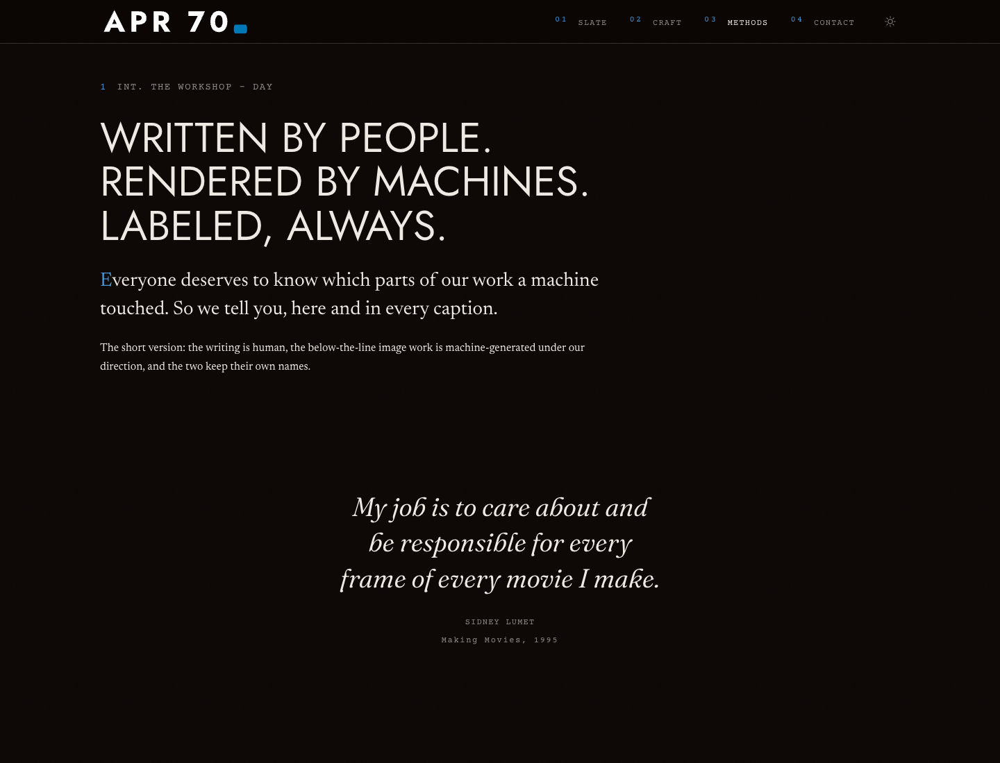
Eight rows now: Scripts through Why It Matters, plus the new Rights row. The privacy row is dated, verified 2026-07-12.
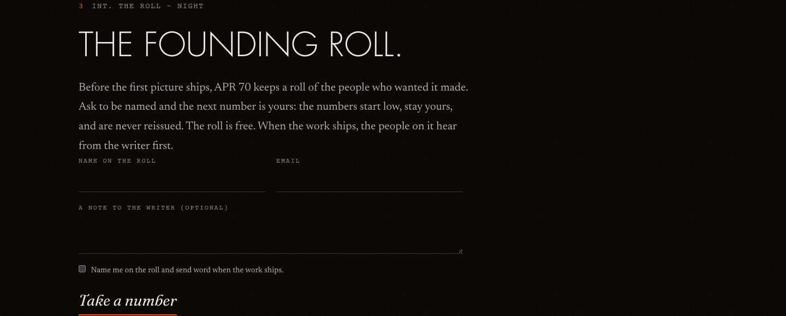
The first public transaction. Numbered, free, never reissued, consent-gated. The roll ships empty: No. 1 is waiting.
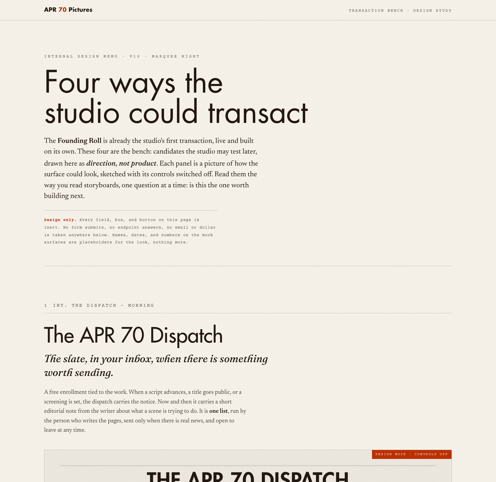
Dispatch Subscription, Collector Editions, Box Office, Support Pass. Design memo only, one yes/no each.
2INT. THE PAPERS - DAY
All file links open from disk. Vault notes also open in Obsidian by path. Nothing below is on the public site.
| Document | What it is |
|---|---|
| master-prompt-v12.md~/websites/master-prompt-v12.md | The brief the current shipped surface executed. The goal line, the laws, the DoD. |
| 00 V10 Feedbackvault · 11.14 V10 Build/ | Your feedback, locked before the run. |
| 00 V10 Change Registervault · 11.14 V10 Build/ | READ FIRST Every feedback + catalog item mapped done / deferred / refused, plus the open flags awaiting your ruling. |
| V10 Best-of Catalogvault · 11.13 V10 Catalog/ | The blueprint that decided what v10 is. |
| Document | What it is |
|---|---|
| Payload DoD evidencevault · 06-qa/ | P1 through P8 with proof, the Founding Roll end-to-end results, the P0 privacy verification, and the NAS deploy verification block. |
| Image pass reportvault · 06-qa/ | All 33 broken slots, the 32 SharedData fills with alt and provenance, the one honest PENDING. |
| v10-public.e2e.spec.tsv10/cms/tests/e2e/ | The regression harness. Run it any time: 20 tests including the zero-third-party network law. |
| v10-build-recap.mdvault · 07-recap/ | The written recap behind this page. |
| Document | What it is |
|---|---|
| Divisions panelvault · 03-divisions/ | Jobs, Disney, Hughes, Selznick, Giannini. Unanimous would-fund; the logo ruling and its seven conditions; verified precedents; Jobs's dissent. |
| Division canonvault · 11.06 Divisions/ | Updated: Sea Gate + Da Hook under NRC as features, with provenance lines. |
| Path map + host notesvault · 01-architecture/ | Where everything lives after the consolidation; NAS footguns. |
| Document | What it is |
|---|---|
| PD Crime & Mystery explorer (1920–1930)vault · 11.02 Development Slate/pd-crime-mystery-1920-1930/ | NEW Interactive filter of Perplexity PD crime/mystery titles for feature / TV / streaming / theater adaptation. Source MD beside the HTML. |
| PD audience image candidatesvault · 11.03 Company Ops/brand/ | NEW Ten rights-verified public-domain audience photographs (radio-listening families, movie-palace crowds, live radio broadcast) with source and license statements; candidates for /craft and a real /troupe. The Egyptian 1926 crowd stays. |
Bring these three to IP counsel. The research is sourced to copyright.gov and flags its own uncertainty; the drafts are what the site now says. None of it is legal advice, and the counsel visit stays on your side of the human gate.
| Document | What counsel gets from it |
|---|---|
| Copyright posture researchvault · 05-ip-copyright/ | COUNSEL Fixation vs registration for unfinished drafts (17 U.S.C. § 102, USCO Circular 1); PD-derivative scope for the Hammett titles; the USCO registration checklist with forms, GRUW group-registration option for up to ten unpublished works, current fees, and portal links. |
| Site rights language draftsvault · 05-ip-copyright/ | COUNSEL The exact notices now live: "Original works reserved.", the /methods Rights row, both PD provenance patterns with verified dates (Red Harvest PD 2025, Maltese Falcon PD 2026). Counsel confirms or red-lines. |
| Change register · flagsvault · 11.14 V10 Build/ | Open counsel-facing flags. The properties count is closed at ten (nine public; The Mayors private while legal counsel review completes). |
| Document | What it is |
|---|---|
| transaction-ideas.htmlv10/docs/transaction-ideas/ · mirrored in vault 04-transactions/ | Four future transaction concepts in the house design, controls visibly off. One yes/no per concept is all it asks. |
| transaction-ideas-note.mdvault · 04-transactions/ | What each design tests and the decision each asks of you. |
3INT. THE BOOTH - NIGHT
kimaserver:8080 · Docker project apr70v3 on the NAS. Verified title-match to local after deploy.
kimaserver:8080/admin (or localhost:3000/admin in dev) · login caruso@apr70.com · password = PAYLOAD_SEED_PASSWORD in the NAS /volume1/apps/apr70-pictures/.env.
Admin → Globals → Site Settings → Brand Kit: logo, logo height, accent, rollover, highlight, default mode. Refresh the site and it wears the change.
Admin → Collections → Founding Roll. Emails and notes are visible only to you.
staging.apr70.com serves v14 as of 2026-09-03, with a valid certificate. Rollback via deploy-v10-to-nas.sh --rollback (or point the apr70-staging reverse-proxy rule back to the prior stack).
apr70.com serves the holding page (source: v10/holding/), Web Station root /volume1/web/apr70/. Self-contained: zero third-party requests. The page it replaced leaked every visitor's IP to Google Fonts.
Its DNS A record points at 127.0.0.1 — for anyone on the internet, that is their own machine. It is why www could never be validated onto the TLS certificate. Fix the A record at Namecheap to 68.174.247.189; until then www must be left OUT of any cert request or the whole issuance fails.
bash ~/websites/apr70-website/_deploy/deploy-v10-to-nas.sh --rollback restores git, database, media, images from today's backup.
# redeploy after local changes (reversible, backs up first) bash ~/websites/apr70-website/_deploy/deploy-v10-to-nas.sh --plan # dry bash ~/websites/apr70-website/_deploy/deploy-v10-to-nas.sh --run # run the regression harness against a production build cd ~/websites/apr70-website/v10/web && pnpm build && \ HOST=127.0.0.1 PORT=4322 PUBLIC_PAYLOAD_URL=http://localhost:3000 node ./dist/server/entry.mjs & cd ~/websites/apr70-website/v10/cms && PUBLIC_SITE_URL=http://127.0.0.1:4322 \ npx cross-env NODE_OPTIONS="--no-deprecation --import=tsx/esm" playwright test tests/e2e/v10-public.e2e.spec.ts # local dev cd ~/websites/apr70-website/v10/cms && pnpm dev # Payload on :3000 cd ~/websites/apr70-website/v10/web && pnpm dev # Astro on :4321
4INT. YOUR DESK - CONTINUOUS
The Roll ships empty on purpose. Number one on the Founding Roll of APR 70 Pictures is still unclaimed, and it will never be reissued. That seems like something a founder should hand out himself.
5INT. THE LEDGER - ARCHIVE
One row per shipped version. This file has no version number on purpose: it is always current, updated with every build, and its git history is the archive. Every future version appends a row here and refreshes the map above.
| Version | Date | What it was | Paper trail |
|---|---|---|---|
| v10 | 2026-07-12 | The truth, brand, and transaction pass: P0 privacy fix, Futura house face, Payload Brand Kit, divisions rebuilt per panel, Sea Gate + Da Hook to NRC, Founding Roll live, SharedData image fill, rights language, admin trim. Playwright 19/19. Deployed to kimaserver:8080; staging untouched. | V10 Change Register |
| v10 · UI + CMS pass | 2026-07-13 | Still v10 — the site is not being redesigned. Marquee lights around the property photos cut as true SVG circles (they were a repeating radial-gradient(5px 4px …) — an ellipse with a sub-pixel antialias ramp, which is why they never looked round at any zoom). Payload now reads v10 everywhere, from a single cms/src/siteVersion.ts constant, so the admin can never lag the site again. DISPATCH un-hidden and parked behind a Payload switch: Site Settings → DISPATCH → Publish takes /dispatch live on refresh, no deploy; it ships OFF. Playwright 20/20. | Website Version Status (vault) |
| v11 | 2026-07-13 | Shipped and went public at staging.apr70.com (not the discarded design pass below — same number, different thing). Billing blocks to one source of truth, roll counter floored, slate hero frames, cursor restored, sprocket holes retired (option E), NRC ruled features-only, apr70.com one screen, /troupe built and gated dark on a real recording, favicons wired through Payload, division accents into Site Settings. E2e repeatable. | Website Version Status (vault) |
| v14 CURRENT | 2026-09-03 | The mobile pass. Seven fixes on the marquee design, measured at 375×812 @2x on the production build: work-page galleries carry srcset again (L.A. Dolce Vita 2.7 MB → 1.0 MB); heroes take the original as a tier when no 1920 tier exists and the fold's sizes describes the cover crop (hero upscale 3.2× → 1.7×); non-hero folds are 4:5 on phones instead of a 156 px band; the sticky header hides on scroll-down and returns on scroll-up, nav links 45 px and the mode toggle 44 px; the letterspaced mono has a 13 px floor on phones (0 elements under 13 px, was 35–43 a page); the LogoReveal splash runs at half length on coarse pointers (2.5 s → 1.5 s); fonts re-subset (already Latin, 12 KB). Ships with the 2026-09-02 brand housekeeping (Punch fallbacks, brand-kit seed, vendored brand tree and Futura-named SVGs archived) and a new home fold: “Brooklyn, before it was a brand.” on the Borough Park portrait before “On the page now.”, written to DB, copy canon, and seed. The layered-cinema POC (three attempts) was killed the same week; decision record docs/decisions/2026-09-02-layered-cinema-poc-no-go.md; its tooling stays (cascade-trap notes, context-meter fix, screenshot helper). Deploy lesson: the NAS Docker daemon runs with iptables off, so builds use the host network (build.network: host). DEPLOYED to staging.apr70.com 2026-09-03; rollback via deploy-v10-to-nas.sh --rollback. | Website Version Status (vault) |
| v13 | 2026-07-18 | The chrome unification pass, three moves ruled by Marco 2026-07-18: the header nav now wears the route line's exact clothes — mono face, accent-blue superscript indices (01–04), underline retired, active route in ink — so the two menus read as one system (the route line stays on the front page as the zine's contents line; the header is the chrome); the mode icon is finally level with the nav for good — root cause fixed (the nav row aligned on baseline, which an svg-only button does not have; the row centres now, and the three prior pixel-nudges are deleted); and the property galleries gained the cinema view — click the picture (or the expand button) and it opens at full browser width on the house scrim, not the Fullscreen API, with the site's one slideshow: PLAY advances every 4.5 s, any manual move stops it, ESC or × closes, scroll locks while open, focus returns to the button. Voice ruling: the site keeps the studio "we" (the JSON-LD already names the founder); no copy touched. The Light Law was recorded for the next stills pass (prompts from the script, natural light, less Hollywood — tools/still-regen/LIGHT-LAW.md). DEPLOYED to staging.apr70.com 2026-07-18; rollback via deploy-v10-to-nas.sh --rollback. Ledger note 2026-09-02: the v12.1 Futura takedown and v12.2 Punch passes (2026-07-27, rows below) shipped after this row under the unchanged v13 constant, so "v13" spans three deployed states; the NAS ran commit 6a6fa4a on 2026-09-02. Restore point captured 2026-09-02: tag restore/v13-2026-09-02 = 6a6fa4a (origin + nas); DB _deploy-backup-v10-2026-09-02/nasdb-before.pgc on the NAS; media SharedData/_snapshots/10-10-cms-media-live-v13-2026-09-02/ (429 files). Procedure: docs/plans/APR70_BRAND_BASELINE_AND_LAYERED_CINEMA_PLAN.md §A.4. | Website Version Status (vault) |
| v12.2 | 2026-07-27 | The Punch goes live. Marco's ruled wordmark (E: Jost + true BH-1866 perf full stop) wired into the site: nav + new footer brand mark per theme, favicon-70 tiles (black / white-on-dark / division amber-imax-navy), 512 touch icon — all Payload-driven and swappable in Site Settings. Root-caused why admin picks "never arrived": the white-ink mark had been slotted into the light-theme field (invisible on paper); both slots now carry the correct ink. Home removed from the header nav (the mark is the way home). Media library carries the full 112-asset kit with generated thumbnails. | Wordmark ballot (vault) |
| v12.1 | 2026-07-27 | The Futura takedown. Licensing letter answered same-day: every FuturaStd file (woff2 + otf) purged from the apex holding page, the v10 app, the legacy monolith, the vault, and both build outputs; masters quarantined at SharedData 10-02-fonts/_ARCHIVED-futura-std-DO-NOT-USE (research only, never ships). House display face is now Jost (SIL OFL, self-hosted variable, normal + italic) at the same weights/sizes/tracking — the page reads near-identical. Old brand collateral (logos, monograms, cards, letterheads, favicons) archived whole at 10-01-logos/_ARCHIVED-futura-era-brand-2026-07-27-DO-NOT-USE. Permanent identity awaits the retype ballot (four OFL directions). | Retype ballot (vault) |
| v12 | 2026-07-13 | The founder's-eye polish, four small moves: gallery frames render at the picture's own aspect (the dark letterbox bed and rails are gone), slate row frames rest in full colour instead of the grayscale dim that read as pixelation, every caption carries one AI line ("AI-generated development frame", no ", disclosed") with the property-title prefix dropped from heroes, and the Apple touch icon ships as a real 180×180 PNG built from the amber mark (iOS ignores SVG). Copy canon, seeder, and admin examples all updated so a re-seed cannot re-arm the old pattern. Late additions on Marco's pass: the mode icon centred on the nav line, and the scaffold boilerplate spec replaced by a real CMS smoke test — 31/31 e2e. Marco's staging Payload edits (logo height 64, sicilian-blue accent, "Made in New York City" copyright) were diffed and adopted before the DB shipped. Zero third-party requests verified across ten routes. DEPLOYED to staging.apr70.com 2026-07-13 evening; rollback via deploy-v10-to-nas.sh --rollback. | Website Version Status (vault) |
| v11 / v12 (design passes) | discarded 2026-07-13 | The beauty pass, attempted twice — Antigravity and Gemini. Neither improved on v10; both were deleted. The names were later reused by the shipped v11 and v12 above. The brief is archived in the vault at 90 Archive/95 Handoffs Archived/websites-prompts/. | — |